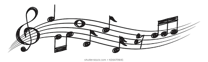
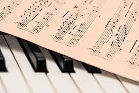

About Laurence Sherr
Laurence Sherr is Composer-in-Residence and Professor of Music at Kennesaw State University in Atlanta. Honors and awards include top prizes in the Delius Composition Contest and the composition competition of the Association for the Promotion of New Music in New York City. Recordings include Jeri-Mae Astolfi's interpretation of his solo piano Nocturne on Chroma: New Music for Piano, released by Capstone Records, and Piotr Szewczyk's performance of his Four Short Pieces for solo violin on his Navona Records Violin Futura CD set. EIMI for violin, saxophone, percussion, and piano, in a live recording by the German group “ensemble Intégrales”, was released on the Ein-Klang label in Europe, and cellist Theresa Villani included his Elegy and Vision on her recording Patterns of Eloquence.

2020 Highlights
Stay tuned for the talented Owls list of 2020 events. We look forward to seeing you!

2019 Highlights
• Performances, lectures, and recordings: New Zealand three-city tour
•Capriccioso for flute and guitar, world premiere; Blue Ridge Frescos French premiere – Paris, France
• Featured composer on Performance Today with broadcast of the cello sonata – Sherr segment heard by an estimated 1 million listeners in five 2017–2019 Performance Today broadcasts
• Music of Resistance and Survival concert including the cello sonata, National Day of Memory, Republic of San Marino
• Lectures in Bologna and Cesena, Italy
• feature article: Music: Remembering the Holocaust
2018 Highlights
• Music of Resistance and Survival concert including the cello sonata, and "Suppressed Music and Art during the Nazi Era" lecture, Galicia Jewish Museum, Kraków, Poland (poster above)
• Fugitive Footsteps for baritone and chorus performed in Hamburg, Germany
• Blue Ridge Frescos for guitar performed at Scriabin Museum, Moscow, Russia, and Forfest Festival, Czech Republic (6th video)
• Cello sonata: national broadcast on Radio New Zealand; performance in Hong Kong, China
• Premiere of Khayele's Waltz for clarinet and cello, Atlanta, GA
2017 Highlights
• Oslo, Norway: Fugitive Footsteps performance, Ullern Chamber Choir; lecture and performance, Jødisk Museum
• European premiere of Nocturne for piano, Forfest Festival, Kromeriz, Czech Republic (5th video)
• Music of Resistance and Survival concert, Florida Holocaust Museum, St. Petersburg, FL
• Songs Not Silenced: Music Forbidden in the Holocaust, concert with commentary by Sherr; highlights in a one-hour TV program – AIB Special Presentation